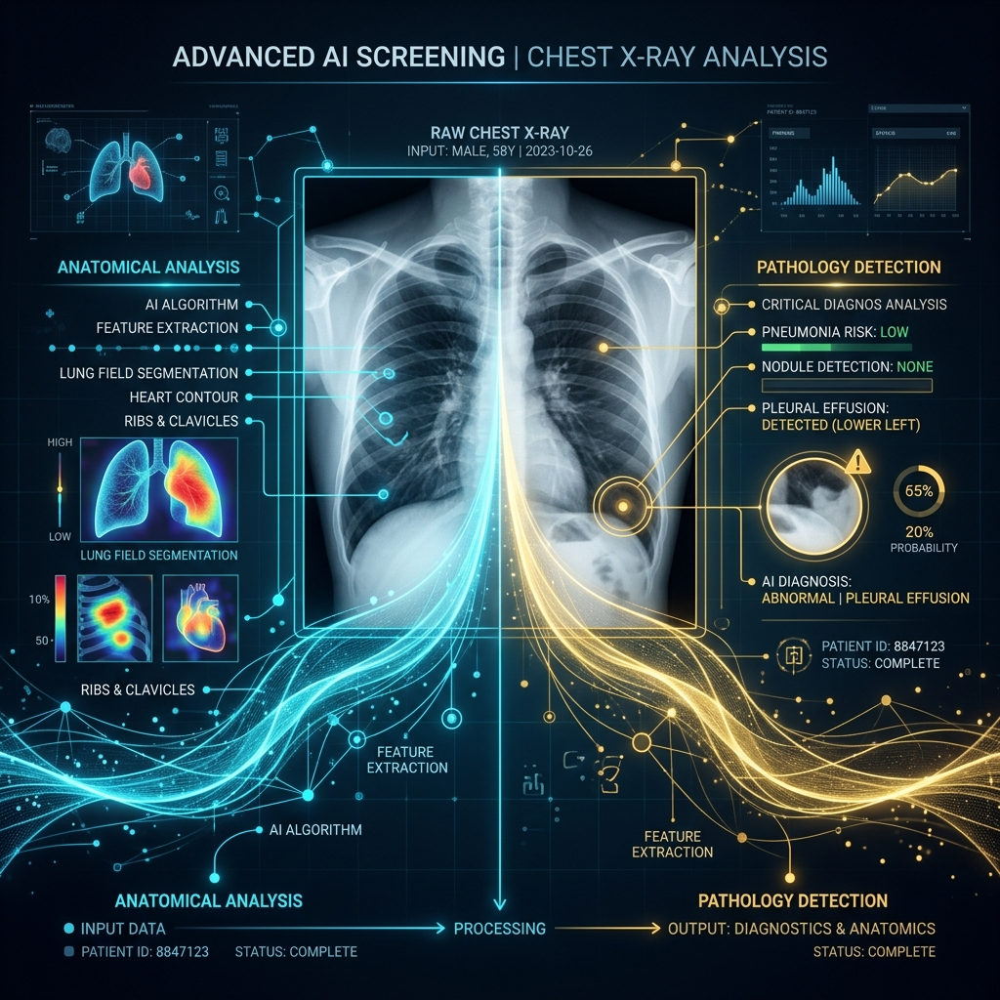

MaruCure utilizes an advanced Dual-Pronged Edge AI pipeline for structural triage, married with a real-time Web-Bluetooth hardware interface for functional respiratory logic.
Designed specifically for offline execution, our WebAssembly engine runs two parallel Convolutional Neural Networks (DenseNet121) entirely in the browser cache without requiring internet connectivity.

Detects distorted, blurry, or low-quality X-Rays taken in the dusty quarry environments. It actively rejects structurally unsound images to prevent false positives.
Hunts for the specific micro-nodular opacities characteristic of pneumoconiosis. Outputs a definitive probability score (0-100%).
Radiology alone cannot diagnose restrictive lung diseases. MaruCure integrates directly with physical hardware to measure the exact volume of air the miner can exhale.
We bypass expensive hospital machines by connecting our PWA directly to a pocket MIR Spirobank via Web-Bluetooth, parsing the raw Little-Endian bytes natively.
Using strict `performance.now()` clocks, the tablet calculates the exact FEV1 and FVC volume ratios, determining the exact level of restrictive lung failure.
Doctors cannot legally act on arbitrary UI percentages. MaruCure synthesizes the Dual-Pillar data into legally-defensible clinical documents, generated entirely offline at the quarry edge.
Instantly generates a highly-structured PDF containing Jan Aadhaar demographic matrices, ILO-aligned radiological interpretations, the embedded AI Heatmap, and SPIRO curves. No cloud rendering required.
Miners without smartphones cannot receive PDFs. The platform connects to rugged, $50 Bluetooth thermal receipt printers to hand the miner a physical triage slip containing an encrypted Verification QR code on the spot.